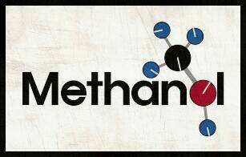

For Your Information
Methanol, also known as methyl alcohol, wood alcohol or spiritus, is a chemical compound with the chemical formula CH3OH. It is the simplest form of alcohol. In the "atmosphere state" it is a light, volatile, colorless, flammable, and toxic liquid with a distinctive odor (smells lighter than ethanol). methanol is used as an anti-frozen coolant, solvent, fuel and as an additive for industrial ethanol.